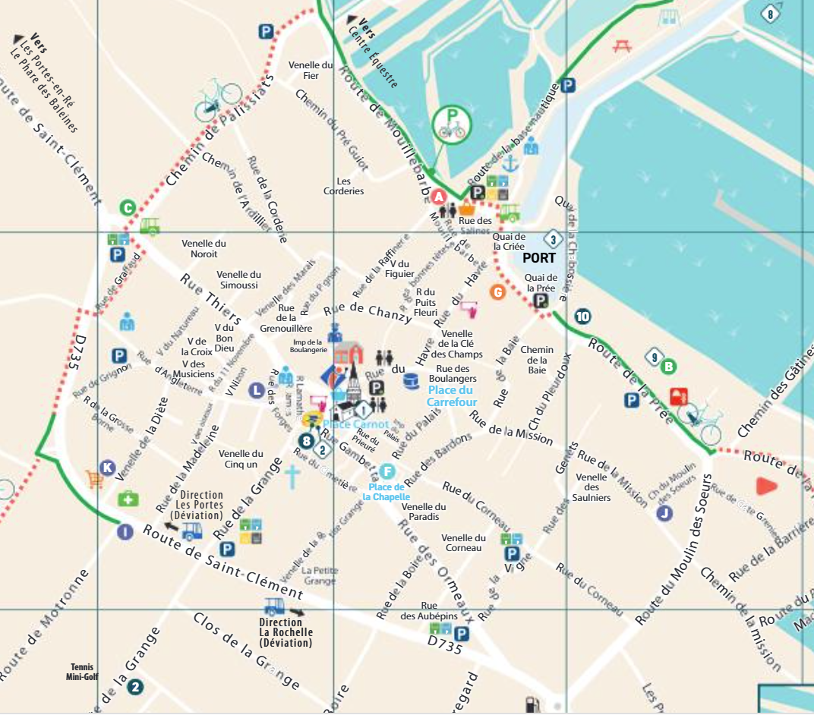

fiche 1
Arriver sur ARS

où se garer ?
En arrivant, se garer en périphérie du village, sur un parking non payant si possible, au croisement de la rue de la Grange.
Préférer se garer au fond du parking pour emprunter la venelle de la Petite Grange, qui mène directement à la place de la Chapelle.
fiche 2
Ouvrir la maison
ajouter ici une photo de la porte, des clés ou du tableau électrique.
à compléter
Décrire ici les étapes à faire en arrivant : récupérer les clés, ouvrir les volets, mettre l’eau ou l’électricité si nécessaire, vérifier le chauffage ou la climatisation.
fiche 3
Fermer la maison
ajouter ici une photo des volets, de la porte ou du compteur.
avant de partir
Décrire ici les étapes de fermeture : vider les poubelles, fermer les fenêtres, couper ce qui doit l’être, fermer les volets, ranger les clés.
fiche 4
Conseils du quotidien
ajouter ici des photos utiles : Wi-Fi, poubelles, commerces, vélos, plage.
infos pratiques
Ajouter ici les conseils utiles pour le séjour : Wi-Fi, courses, marchés, plages, vélos, déchets, voisins, numéros utiles.
Wi-Fi
à compléter
à compléter
Courses
à compléter
à compléter
Déchets
à compléter
à compléter
Urgence
112
112